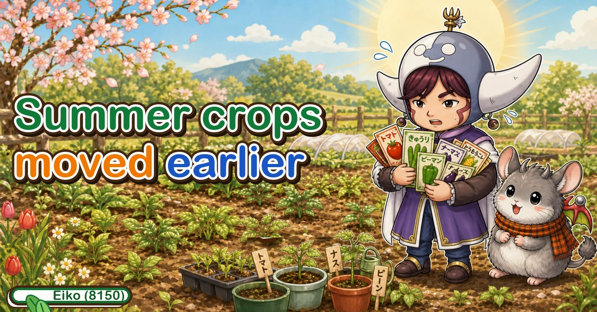
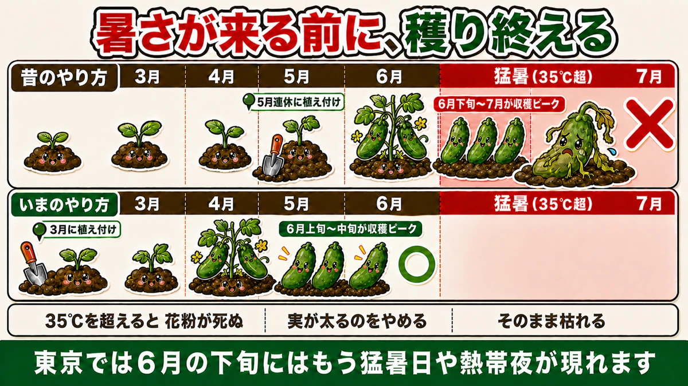
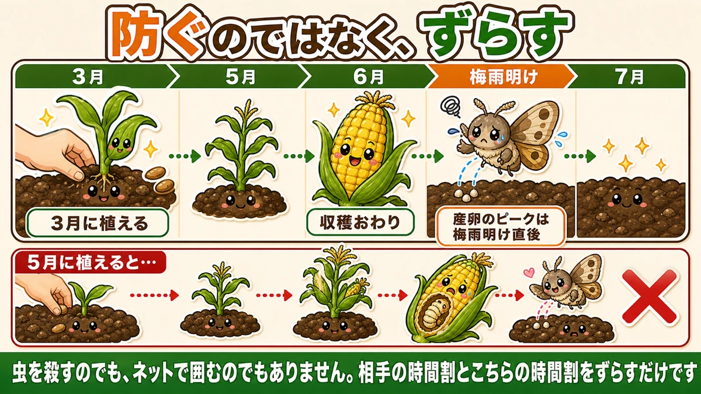
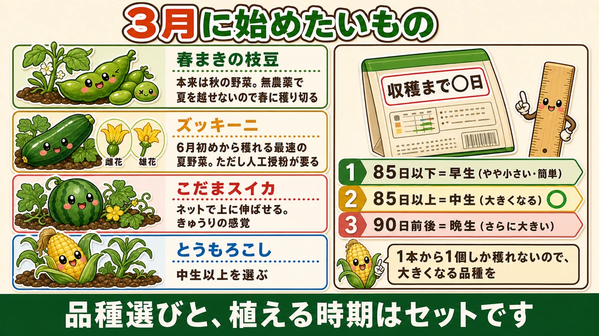

Summer crops have moved earlier 🌱 What to start in March

🗨️ "Summer crops go in at the start of May, surely?"
🗨️ "Every year the heat finishes them before they fruit."
🗨️ "There was a caterpillar inside my sweetcorn."
Hello, I'm Eiko. Eight years of growing vegetables organically and without pesticides, and a teaching licence in science.
The monthly instalment — March. The busiest month of the year, when everything that stopped in winter starts at once.
And it's the month that has changed most since I started.
The point, up front:
Summer crops have moved earlier.
The old pattern was planting out in late spring. The new one is finishing the harvest before the heat arrives ☺️
Why it moved

What this diagram says （図解の文字）
- Finish the harvest before the heat
- The old way — plant at the start of May; the harvest peak falls in late June and July, into extreme heat ×
- The new way — plant in March, so the peak arrives before the extreme heat
Because summer arrives earlier than it used to. In many places days above 35 °C now turn up before midsummer has properly begun.
Uncomfortable for people, and much worse for plants:
- above about 35 °C, respiration outruns photosynthesis
- pollen dies and flowers don't set
- fruit stops swelling
- and then the plant goes
So you move the peak forward
Finish the harvest peak before the heat.
Plant in late spring and fruiting starts exactly when the heat does — which is where most summer crops stall. Start in March and you're picking in early summer, taking the best of it before the temperature climbs.
It's the same reasoning as potatoes, which must be lifted before the heat kills the tops. What was a potato rule is now the rule for everything.
Working backwards to miss the pests

What this diagram says （図解の文字）
- Don't defend — shift
- Planted in March → harvest finished ／ the egg-laying peak is just after the rainy season ends
- × planted in May…
- Not killing the insect, not enclosing it in netting. You simply move your timetable away from its timetable
Anyone who has grown sweetcorn has peeled back the husk and found a caterpillar inside — the larva of a moth that lays on the plant, and the larva goes inside the cob. Inside, nothing you spray reaches it, let alone anything you'd use without sprays.
But the laying has a season
The egg-laying peak comes right at the start of the real summer heat. It's a fixed window — which means there's an obvious move:
Finish the harvest before then.
Planted in March, that's achievable. By the time the larvae are active, there's no sweetcorn left in the garden.
"Shift" rather than "defend"
This is, I think, the most important idea in no-spray growing. You aren't killing anything and you aren't enclosing anything. You're moving your timetable away from the insect's.
- know when it arrives
- be finished before then
No chemicals, no equipment. You win with a calendar.
Since learning this, the years my sweetcorn failed were simply the years I planted late.
Choose sweetcorn by the number of days
On the back of the packet, find days to harvest:
- 85 days or fewer — early. Slightly smaller, and easy
- Over 85 days — maincrop. Larger
- Around 90 days — late. Larger still
The rule is simple: more growing time, bigger cobs.
And sweetcorn has a particular constraint: one plant gives you essentially one cob. A tomato gives dozens, so a small one doesn't matter. With one cob, you want the variety that gets big.
So I'd choose maincrop or later — which only works if you plant in March. Choose a 90-day variety and plant in late spring and you won't be finished before the pest arrives.
Variety and planting date are one decision, not two.
Five things to start

What this diagram says （図解の文字）
- Things to start in March
- Spring-sown edamame — really an autumn crop; it can't get through summer without sprays, so you finish it in spring
- Courgette — female flower ／ male flower — the fastest summer crop, picking from early summer, but it needs hand pollination
- Small watermelon — grown up netting…
Spring-sown edamame
Edamame is really an autumn crop — and getting it through the summer without sprays is genuinely hard, because shield bugs arrive and the pods don't fill. I've failed at it repeatedly.
Which is why early varieties for spring sowing exist: finish before the summer gets going. The "shift" idea again.
It only works with the right variety and the right date — an autumn variety sown in spring won't do it.
Courgette — the first summer crop to crop
Fast-growing, and picking from early summer if all goes well — the earliest of the summer crops. A short wait, which suits a first attempt.
One thing to know: courgettes carry male and female flowers separately. Without pollen from a male flower, the female sets nothing — and early in the season there aren't many pollinating insects about.
A female flower that yellows and drops while still small didn't get pollinated.
The fix is easy: hand pollinate. Pick a male flower, strip the petals, and dab it into the centre of the female. Do it in the morning.
Small watermelon
Watermelons sound space-hungry, and a small-fruited variety can be trained up netting — much like a cucumber. Easier to handle than a large-fruited type, and you don't have to eat the whole thing at once, which suits a household.
Tomatoes, aubergines and cucumbers, under cover
These were sown in February (aubergines and tomatoes) and mid-March (cucumbers). March is the month they're growing on as plants.
Not sowing your own? You'll buy plants in mid spring, and that's perfectly fine.
And the insects start
From March, aphids reappear on anything soft and new, and cutworms start felling transplants overnight. Both are much easier to deal with now, while the numbers are small — which is the whole argument for looking every day.
March is the month of making it in time
Everything above is one sum:
- the heat arrives on a date
- the pests arrive on a date
- so the harvest has to be finished before those dates
- which fixes the planting date, and therefore the sowing date
None of it is about today's weather. It's arithmetic ☺️
To sum up
- ✅ Summer crops have moved earlier — finish before the heat
- ✅ Above about 35 °C, pollen dies and fruit stops swelling
- ✅ Plant in March and the picking peak lands before the heat
- ✅ The sweetcorn pest lays in a fixed window — finish before it
- ✅ Don't defend; shift your timetable. You win with a calendar
- ✅ Choose sweetcorn by days to harvest; longer = bigger
- ✅ One plant, one cob — so variety and date are one decision
- ✅ Spring edamame: the right early variety, finished before summer
- ✅ Courgettes crop first, and need hand pollination early on
- ✅ Small watermelons train up netting
- ✅ Deal with aphids and cutworms now, while the numbers are small
You don't have to do all of it. Work out roughly when the real heat starts where you are, and count back. That date is your planting date 🌱
Thank you for reading!